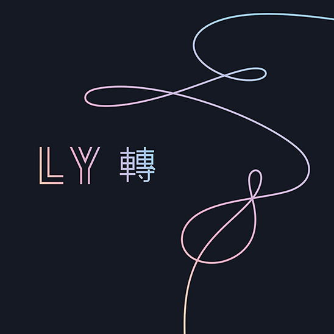
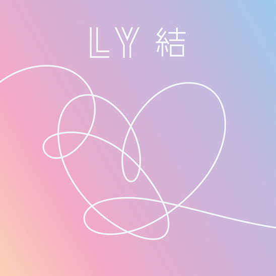

In May, BTS released their third Korean-language studio album, Love Yourself: Tear and for the first time, their comeback stage was held not on a Korean music show, but at the 25th Billboard Music Awards performing lead single “Fake Love”. They won Top Social Artist again and the streak has continued to this day. Non fans thought surely, the hype would die, but this marked their solid footing in music markets outside of Asia. Even South Korea’s president, Moon Jae In congratulated them for spreading Korean culture and increasing tourism. On October 7th, BTS won the Van Fleet Award for continuing to strengthen South Korea and US relations. They continued to make appearances on TV shows adding America’s Got Talent and The Tonight Show Starring Jimmy Fallon to their extensive list of American promotional activities. Watch this Buzzfeed video where they play with puppies and answer some questions!
In August, they released Love Yourself: Answer, the compilation album that concluded the “Love Yourself” series. Thematically it placed the songs from the two previous albums along with new ones within the narrative of beginning, development, turn and conclusion. Love Yourself: Her was about the excitement of love, Love Yourself: Tear was about the pains of farewell and Love Yourself: Answer illustrated the enlightenment of self-love. The series was inspired by Jungian psychology and the journey to understanding oneself and they’d continue with this theme in future albums. Due to their positive messaging in the form of music, RM delivered a speech to help launch the United Nation’s Generation Unlimited campaign, an education and employment program for young people.
|  | |
|---|---|
| 3rd Full-length Album | Love Yourself 轉 'Tear' |
| Genres | Hip hop · alt-R&B · EDM · Pop · Jazz |
| About | This album deals with themes of heartbreak, loneliness, fear of being ones trueself and their lives as celebrities. They reassure in "Paradise" that there's no need to run without even knowing why, we can just exist. |
| Song: Outro:Tear | |
|  | |
|---|---|
| Repackage Album | Love Yourself 結 ‘Answer’ |
| Genres | Hip hop · R&B · Pop |
| About | The conclusion to the "Love Yourself" series links key songs in each album into a single theme, imparting the message that “loving yourself is true love”. |
| Song: Trivia 轉 : Seesaw | |
the group released their third Japanese studio album Face Yourself which debuted at number 43 on the Billboard 200 making it the third-highest-charting Japanese album in the history of the chart.
Love Yourself: Tear debuted at number one in the U.S. Billboard 200 becoming the first Kpop album to top the US charts. The single “Fake Love” became their first top ten hit at number 10 on the Billboard Hot 100.
The “Idol” music video broke Taylor Swift’s record when it received 45 million views in 24 hours.
Commenced their third world tour, Love Yourself World Tour. For the last stop in America, they performed at Citi Field in Queens making them the first Korean act to perform in a US stadium. All 40,000 tickets sold out in under 20 minutes.
Love Yourself: Answer became the first Korean language album to be certified Platinum.
Released Burn the Stage: The Movie in theaters worldwide accumulating $1.2 million on opening day and $3.54 in total over the three day weekend breaking the record for highest grossing event cinema musical production previously set by One Direction.
Won a record-breaking seven awards at the MMAs including Best Rap/Hip Hop Song, Album of the Year and Artist of the Year.
Won nine awards at the MAMAs including Artist of the Year, Best Music Video and Album of the Year.